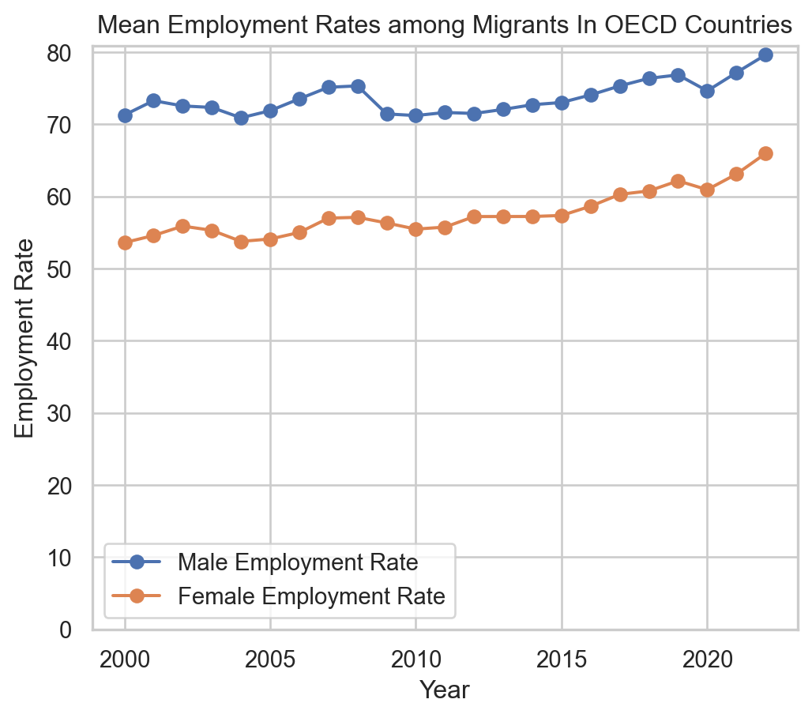
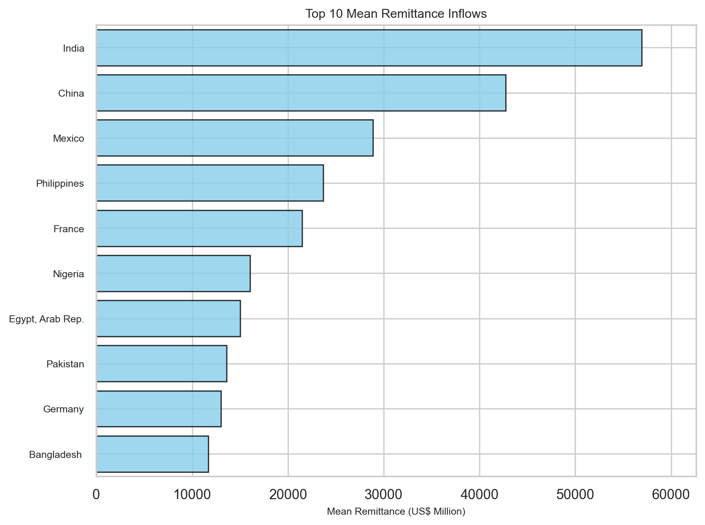
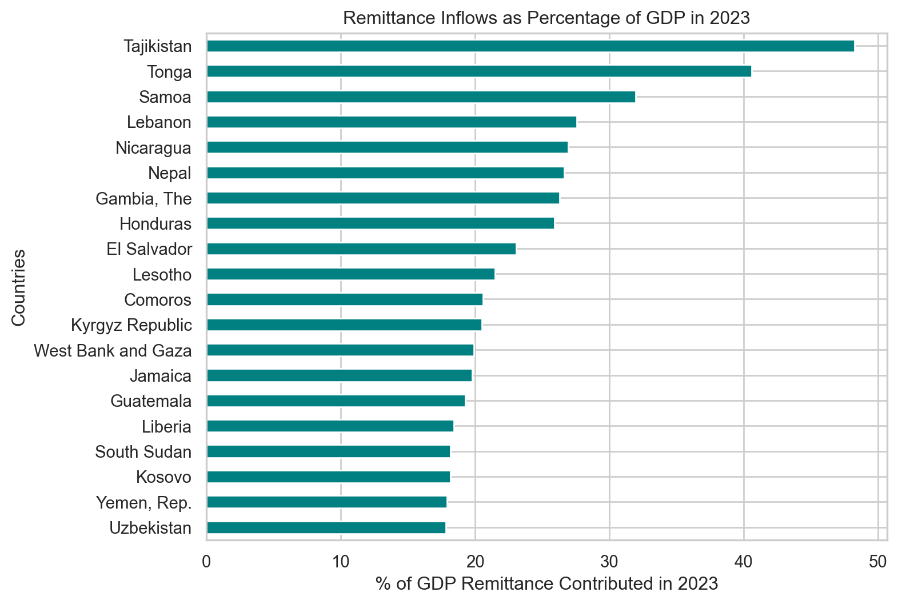
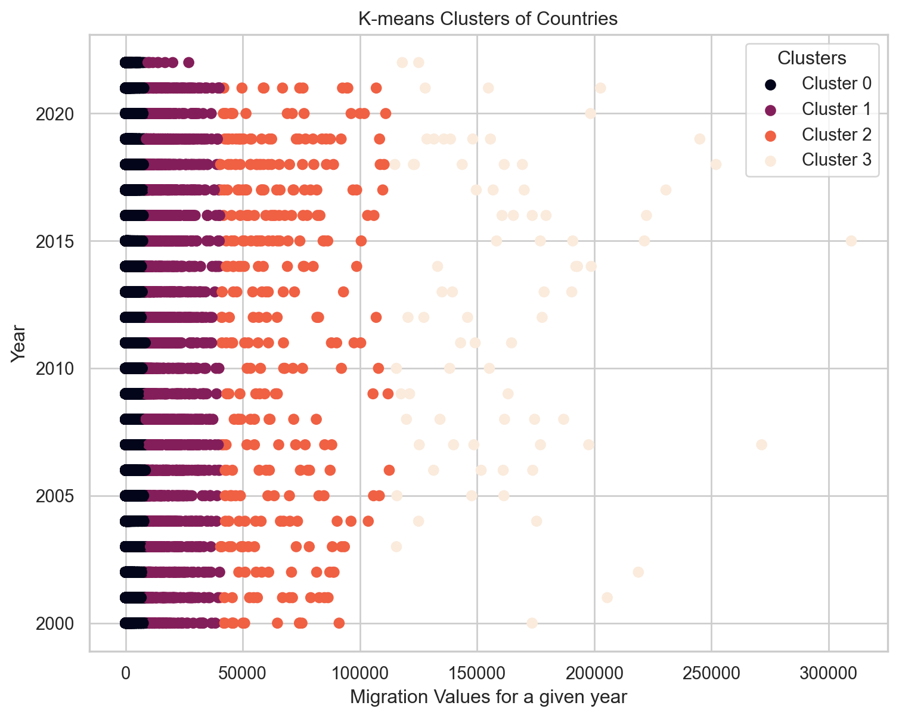
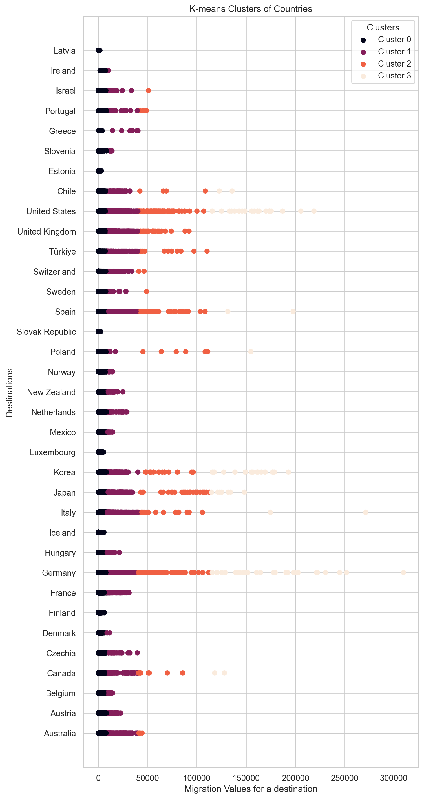
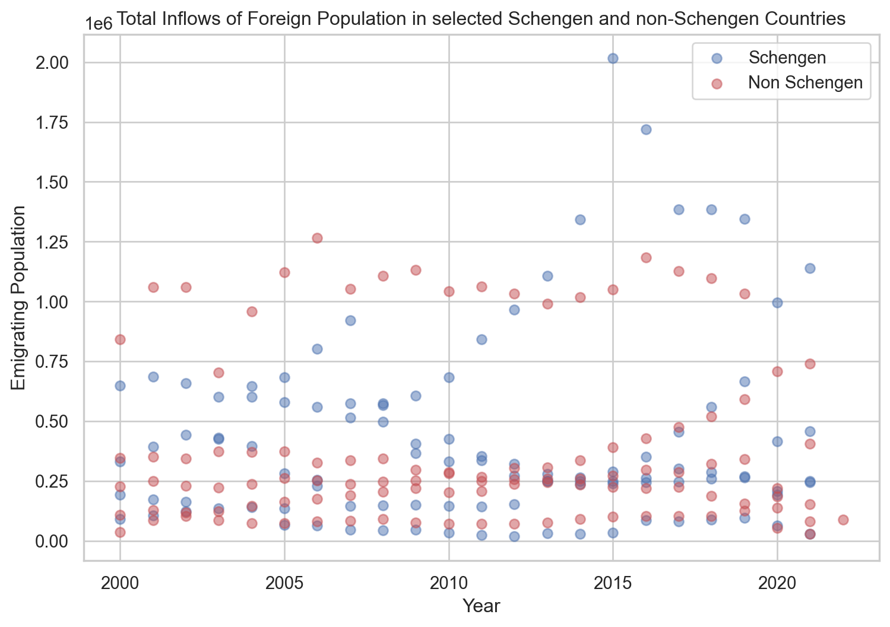
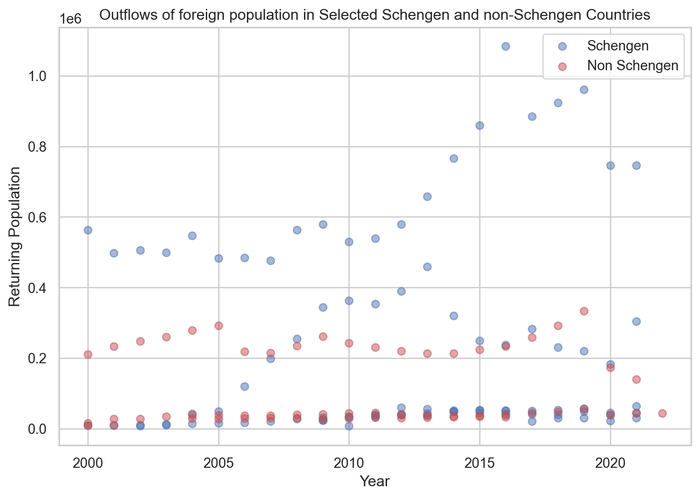

Haven’t we all thought about moving to another location during several occasions in our lives? Probably, more than once. May be we got a better job offer in another city or a country. Maybe our country is devasted by wars and ethnic conflicts, and we don’t feel safe in its territory. Maybe our place faced severe climatic conditions, and there remained no means to sustain a life. For one reason or another, humans have been moving across the globe. Our ancestors moved around engaging in business, seeking favorable climatic conditions, waging wars, and building settlements.
As a species, humans tend to be a very mobile species. It has been ages since we started migrating. First migration of modern humans from Africa dates back to 70,000 to 100,000 years ago. Yes, it has been a long time, and we still have not stopped migrating. However, the patterns, drivers, and impacts of migration have changed over time. While it is impossible to track the personal stories of every migrating individual, because of the collective systems in which we live and behave, it is possible to study and generalize the overall story of how and why we might be migrating. This blog is an attempt to explore the modern trends in migrations since 2000 till 2022 with respect to economy, socio-political conflicts, and human rights of displaced populations.
Research Questions
Which countries are the top destinations?
Where do the large emigrating populations come from?
Which migrating populations are seeking naturalization in their destinations?
Are there any national/ethnic/environmental reasons that explain migration of some populations?
How are migrating populations connected to the economy of their birth countries and the destinations?
Are there any policies that favor human mobility?
Data Description
The datasets that will be used to study the migration dynamics will be obtained from “Organization of Economic Cooperation and Development (OECD)” and “The Global Knowledge Partnership on Migration and Development (KNOMAD)”. The dataset from OECD will contain the migration rate–recorded as the number of individuals migrating from one country to another–across 2000-2022 where as KNOMAD’s datasets contains the information about the remittance of a country. Remittance is the capital received by a country from their native populations working overseas.
The OECD dataset has measures of non-native populations entering into (inflows) and leaving from (outflows) top destinations. These measures are based on population registers, residence and/or work permits, and estimation from surveys.
The general view of the the data in OECD dataset is shown in Table 1
Code
import pandas as pdimport numpy as npimport matplotlib.pyplot as pltimport plotly.express as pximport plotly.io as pioflows = pd.read_csv("../data/inflows of foreign population by nationality.csv", low_memory=False)# dropping null valuesflows = flows.dropna(subset=['Value'])flows_cleaned = flows.dropna(subset=['Value'])# dropping columns that we don't needflows_cleaned = flows.drop(columns=['Flag Codes', 'Flags'])flows_cleaned.head()
Table 1: Migration Flows
CO2
Country of birth/nationality
VAR
Variable
GEN
Gender
COU
Country
YEA
Year
Value
0
AFG
Afghanistan
B11
Inflows of foreign population by nationality
TOT
Total
AUS
Australia
2000
2000
887.0
1
AFG
Afghanistan
B11
Inflows of foreign population by nationality
TOT
Total
AUS
Australia
2001
2001
456.0
2
AFG
Afghanistan
B11
Inflows of foreign population by nationality
TOT
Total
AUS
Australia
2002
2002
660.0
3
AFG
Afghanistan
B11
Inflows of foreign population by nationality
TOT
Total
AUS
Australia
2003
2003
1015.0
4
AFG
Afghanistan
B11
Inflows of foreign population by nationality
TOT
Total
AUS
Australia
2004
2004
1340.0
Note
The variable column containts two unique labels. Inflows of foreign population by nationality tells the number of people arriving at a country from their birth countries. Outflows of foreign population by nationality tells the number of non-native population leaving for their birth country from a country.
The general overview of the remittance sent out by a country is shown in Table 2.
Code
import pandas as pd#remittance sent out by a countryremitance = pd.read_excel("../data/outward-remittance-flows-brief-39-december-2023-revised-as-of-mar.8-2024_1.xlsx", header =1, index_col=None)#dropping null valuesremitance = remitance.dropna()remitance.head()
Table 2: Remittance Outflows
Remittance outflows (US$ million)
2000
2001
2002
2003
2004
2005
2006
2007
2008
...
2014
2015
2016
2017
2018
2019
2020
2021
2022
% of GDP in 2022
1
Albania
0.000000
0.000000
0.000000
4.135728
4.863740
6.511798
26.532132
9.940000
279.700000
...
178.722842
153.312400
147.156757
106.330983
114.879337
119.679641
124.630376
140.344310
149.489653
0.783366
2
Algeria
0.000000
0.000000
0.000000
0.000000
0.000000
27.000000
35.000000
48.863733
26.782545
...
295.922112
72.128991
76.633496
214.378057
87.006383
81.545365
149.253465
83.259319
60.221598
0.030873
5
Angola
266.290000
216.060000
223.507959
229.849970
296.009591
214.905216
412.666785
602.671451
669.453676
...
2746.615873
1252.909012
1176.110314
961.415276
681.627015
549.082043
576.471437
445.400144
517.668187
0.421619
6
Antigua and Barbuda
1.558148
1.564444
1.411481
1.489293
1.566737
1.670141
1.837155
2.131100
2.367652
...
52.100000
52.822644
54.742927
55.445390
54.174268
47.772733
44.608057
52.574952
59.787266
3.400868
7
Argentina
267.700000
256.100000
119.550000
180.410000
234.470000
314.010000
356.500000
463.192097
631.436069
...
732.414557
685.001366
769.242058
1060.484530
1010.375536
669.932291
521.040572
596.899083
590.412343
0.093626
5 rows × 25 columns
Note
Remittance, in this context, is defined as the sum of money sent by a person working abroad back to their birth country.
Another dataset on remittance is for the remittance received by a country which is shown in Table 3
We will use these datasets for the rest of our studies.
Emigrating Population
Note
Migration can be understood as the movement of people in and out of a country. Moving in of non-native populations and moving out of native population can happen simultaneously in a country.
Emigrating population can be defined as the population that is leaving their native country and is moving into a new country. The reasons and motive for such ouflows can be several, inclduing employment opportunities, political conflicts, refugees, and so on. The datasets we are using in this project does not have comprehensive information to study the actual reasons behind the migrations, but we will later look into employment opportunities in countries that recieve highest number of emigrants. Other reasons can also be empirically implied based on the conditions at the time of migration in their former countries. For instance, we can expect a bigger number of population leaving a country with ongoing war or political conflcts or a climate disaster. First, let’s see the general trend in emigrating population. The Figure 1 shows the total number of foreign people arriving in a destination (for instance, United States) over time.
Code
# focusing on inflowing populationinflows_cleaned = flows_cleaned[flows_cleaned['Variable'] =='Inflows of foreign population by nationality']#dropping total values for a year and a country from the dfinflows_cleaned = inflows_cleaned[inflows_cleaned['Country of birth/nationality'] !="Total"]#choroplethfig = px.choropleth( data_frame=inflows_cleaned.groupby(['COU', 'Year', "Country"], as_index=False)['Value'].sum(), locations="COU", animation_frame="Year", animation_group ="COU", color="Value", title="Inflows of Foreign Population", color_continuous_scale="Viridis", projection="equirectangular", labels={"Value": "Migration Value"}, hover_name="Country", template="ggplot2",)fig.show()
Figure 1: Total emigrating population in a given year. The daset is limited to OECD countries as destinations for migrants.
This figure does not indicate where all these moving populations originate from. The figure only shows the total number of immigrants arriving at a destination in a given year. So it would be even more interesting to see where are these populations arrriving from. In Figure 2, for brevity and effective communication of information in a compact graph, we will focus only on the top 20 movements in 2020.
Figure 2: Total Emigrating Population in 2020, both origins and destinations(arrows) indicated
The above figure shows a very interesting trend in Europe. Germany tends to be the favorite destination among many European nations (Bulgaria, Italy, Romania, Crotia, Poland). There is a large movement from Ukrain to Poland as well. Syrian populations from West Asia also migrate to Germany in huge numbers. The migration from Syria might be the cause of civil unrest within the country while other migrations within the European nations might be due to the open borders among Schengen nations.
While European nations mostly see continental migrations, other destinations seem to have cross-continental migration. People from India are migrating to US and Canada in 2020. Populations from China also migrate into the US. Spain receives population from Morocco and Brazil while Portugal from Colombia. There are contintation migrations in other continents as well (Mexico to USA, Venezuala to Chile, China to Korea and Japan, Viet Nam to Japan), but they are not as consistent as in Europe (see Figure 20).
Rather than just focusing in the year 2020, seeing the total inflows over time might be better to see the trend. The aggregate is calculated for the top 10 moving population from 2000-2020 and is visualized with their origin and destination countries in the Figure 3.
Code
# total inflows till 2020total_inflows_10 = inflows_cleaned[inflows_cleaned['Year'] <=2020]total_inflows_10 = total_inflows_10[total_inflows_10['CO2'] !='Total']# total inflows from a country to another country (grouped)total_inflows_10 = total_inflows_10.groupby(['Country of birth/nationality', 'Country'])['Value'].sum().reset_index(name='Total Migration')# some countries have larget moving populations moving to different locations, so 16 and not 10top_10_inflows = total_inflows_10.nlargest(16, "Total Migration")# sorting them in descending ordersorted_top_10_inflows = top_10_inflows.sort_values('Total Migration', ascending=False)# drawing parallel categoriesfig = px.parallel_categories( data_frame=sorted_top_10_inflows, dimensions=['Country of birth/nationality', 'Country'], color='Total Migration', color_continuous_scale=px.colors.sequential.Viridis, labels={'Country of birth/nationality': 'Birth Country','Country': 'Destination Country' })fig.update_layout( title="Top 10 Population Leaving their Birth Country in 2000-2020", title_x=0.5, coloraxis_colorbar=dict(x=1.1), margin=dict(l=100, t =80) # adjust margins on the left and top)fig.show()
Figure 3: Top Mean Inflows of Population in 2000-2020.
As the figure suggests, Germany and US are the top destinations for many migrating populations. As was seen in 2020, the top moving populations are very similar on average in 2000-2022 time period. So it can be assumed the dynamics between these countries will continue in the future as well, disregarding any unprecendented events like wars or changes in policies.
Caution
It is important to take all the conclusions made based on the total number with caution. A small country from where 60% of native population are leaving can still have less migrants in number compared to a country with bigger population from where only 5% of its total population are moving. The former case is more alarming even if fewer people are migrating. So studying in terms of more representative measures (ratio of the total population) will be more scientific.
At this point, after exploring the top emigrating populations and destinations, we might assume that the total migration into these destination have increased over time. So it might a good idea to test our intuitive assumption about the change in emigrating population overtime in top destionations. The change in total inflows is depicted for United States, Korea, Japan, Germany, Italy, and Canada in Figure 4.
Code
# only selected few top destinationstop_countries = ["United States", "Korea", "Japan", "Germany", "Italy", "Canada"]inflows_top_countries = inflows_cleaned[inflows_cleaned['Country'].isin(top_countries)]import seaborn as snsimport matplotlib.pyplot as pltplt.figure(figsize=(8, 5))sns.set(style="whitegrid")# plotting line graphsns.lineplot(data=inflows_top_countries, x="Year", y="Value", hue="Country", estimator=sum, errorbar=None, marker="o", markersize=8, linewidth=2)plt.title("Total Inflows of Foreign Population", fontsize=16)plt.xlabel("Years", fontsize=14)plt.ylabel("Total Migrants Inflows", fontsize=14)plt.grid(True, linestyle="--", alpha=0.7)plt.xticks(fontsize=12)plt.yticks(fontsize=12)plt.legend(title="Country", title_fontsize='14', loc='upper left')plt.tight_layout()plt.show()
Figure 4: Total Inflows Over Time
As shown in figure Figure 4, there is no stark differences in total inflows over time among these countries expect in Germany. During 2015, there is a large inflows of foreign population compared to the previous years. According to a research, this was attributed to European refugee crisis “when the flow of migrants increased dramatically from 153,000 in 2008 to more than 1 million in 2015. This was mainly due to the growing number of Syrians, Iraqis, Libyans, Afghans and Eritreans fleeing war, ethnic conflict or economic hardship” (Peters, Engelen, and Cassimon (2023)).
Naturalization
When we talk about the emigrating populations, naturalization is also part of a conversation. Naturalization is a process by wich a non-national citizen acquires the nationality of a certain country. The tendency to seek nationality in a country can have personal motives but it also can be reflective of the conditions in migrants’ birth countries. For instance, migrants fleeing wars, ethnic discrimination, and climate disasters will likely seek permanent settlements in their new destinations. There are two players in this dynamics: the country granting citizenship and the country to which migrants belong to. The Figure 5 shows the top five countries granting nationality over time. We have line graphs for eight countries, which means that five of these eight countries are the top five grantees of nationality in any given year from 2000-2022.
Code
data = pd.read_csv("../data/inflows of foreign population by nationality.csv", low_memory=False)# subsetting only acquisition variablesnationality_acquisition = data[data['Variable'] =="Acquisition of nationality by country of former nationality"]# calculating total acquisition in a country in a yearnationality_acquisition_sum = nationality_acquisition.groupby(['YEA', 'Country'])['Value'].sum().groupby('YEA', group_keys=False).nlargest(5).reset_index()# line graphfig = px.line(nationality_acquisition_sum, x='YEA', y='Value', color='Country', title='Total Naturalization of Foreign Poupulations')fig.update_layout( legend_title_text='Country Granting Citizenship', legend_title_font=dict(size=12), plot_bgcolor ='white', title_x =0.5)fig.update_xaxes(title_text='Year')fig.update_yaxes(title_text='Total Acquisition of Nationality')fig.show()
Figure 5: Top countries granting citizenships to non-native populations.
It can be seen in the figure that there are no drastic changes in the trend of naturalization among non-native populations except in US. For instance, in 2003, the total numbers of naturalization falls compared to 2002. Similarly, the rate increase from 2007 to 2008 and decreases from 2008-2010. Rather than just highlighting the trend of naturalization over time, it also begs attention to see which population are seeking naturalization in a given year. Due to constraints in space and time, this blog only explores it for a single year. The Figure 6 studies this for the year 2021.
Code
# year 2021. Exclude total acquisitions for a destination.nationality_acquisition_2021 = nationality_acquisition[(nationality_acquisition['YEA'] ==2021) & (nationality_acquisition['CO2'] !="TOT")]#top 10 migrants seeking naturalizationtop_10_acquisition = nationality_acquisition_2021.nlargest(10, columns ="Value")fig = px.bar(top_10_acquisition, x='Country', y='Value', color='Country of birth/nationality', title='Acquisition of Nationality by Foreign Population in 2021')fig.show()
Figure 6: Top non-native populations seeking citizenships.
Figure 6 shows the top 10 non-native populations seeking nationality in different destinations. Multiple nationalites including India, China, Mexico, Phillipines, Cuba, and Dominican Republic seek naturalization in US. Other destinations do not have multiple, large non-native populations seeking nationality. Syrian migrants were on of the top 10 populations acquiring nationality, and they were naturalized in Netherlands and Sweden. Moroccan migrants were naturalized in Spain and large number of Indian migrants also gained nationaloty in Australia in 2021.
Warning
The data collected for 2021 might be incomplete or even unrepresentative of the general phenomenon due to the COVID-19 pandemic.
Returning Population
While some migrants tend to stay permanently at their destinations, some tend to return to their birth countries. Figure 7 shows the amount of non-native population returning to their birth countries.
Code
# now focusing in outflows (not inflows)outflows_cleaned = flows_cleaned[flows_cleaned['Variable'] =='Outflows of foreign population by nationality']outflows_cleaned = outflows_cleaned[outflows_cleaned['Country of birth/nationality'] !="Total"]# shows total value for a country in a given yearfig = px.choropleth( data_frame=outflows_cleaned.groupby(['Country of birth/nationality', 'CO2', 'Year'], as_index=False)['Value'].sum(), locations="CO2", animation_frame="Year", animation_group="CO2", color="Value", title="Return of Native Population", color_continuous_scale="Viridis", projection="natural earth", labels={"Value": "Total Migration Value"}, hover_name="Country of birth/nationality", template="plotly",)fig.show()
Figure 7: Non-native populations returning from a country.
Figure 7 shows which countries are receiving how much of their native population back from abroad across years, but it does not show where they are returning from. Figure 8 shows the movement from the temporary residences to birth countries for top moving populations in 2020. Birth countries are indicated with an arrow.
Figure 8: Top populations returning from overseas to their birth nations.
We can deduce for the figure that the within a continental movements see higher return. For instance, in 2020, muliple non-native populations returned to their birth countries in large number from Germany. Some of the top returned were also seen within the West Asian countries: Turkey to Iran, Iraq, Azerbaijan, Syria,and Turkemenistan. East Asian countries also had huge returns of native populations: Japan to Viet Nam and Korea; Korea to China, Thailand, and Viet Nam. We can conclude that the migrants that move to destinations close from home countries tend to return more in general.
The total returns over the period of 2000-2020 is also shown for top countries in Figure 9.
Code
# total from 2000 - 2020outflows_2000_2020 = outflows_cleaned[outflows_cleaned['Year'] <=2020]outflows_2000_2020 = outflows_2000_2020[outflows_2000_2020['CO2'] !='TOT'].sort_values('Value', ascending=False)# total migrationoutflows_2000_2020 = outflows_2000_2020.groupby(['Country of birth/nationality', 'Country'])['Value'].sum().reset_index(name='Total Return')top_10__return = outflows_2000_2020.nlargest(12, "Total Return")# Sankey diagram for top 10 returns# check plotly tutorialsimport plotly.graph_objects as godef plot_migration_arc_diagram_mean_inflows(data, top_n=10): filtered_data = data nodes =list(set(filtered_data['Country of birth/nationality']).union(set(filtered_data['Country'])))# linking temporary residance and their return. # country (temporary) --> target(country of birth) links = []for _, row in filtered_data.iterrows(): links.append({'source': row['Country'], 'target': row['Country of birth/nationality'], 'value': row['Total Return']}) fig = go.Figure(data=[ go.Sankey( node=dict( pad=15, thickness=20, line=dict(color="black", width=0.5), label=nodes ), link=dict( source=[nodes.index(link['source']) for link in links], target=[nodes.index(link['target']) for link in links], value=[link['value'] for link in links] ) ) ]) fig.update_layout(title=f"Top {top_n} Population Return in 2000-2020", title_x=0.5)# add titles to the source and target nodes fig.update_layout( annotations=[dict( x=0.0, y=1.0, xref='paper', yref='paper', text='Temporary Residence', showarrow=False, font=dict( size=16, color='black' ) ),dict( x=1.0, y=1.1, xref='paper', yref='paper', text='Birth Country', showarrow=False, font=dict( size=16, color='black' ) ) ] ) fig.show()plot_migration_arc_diagram_mean_inflows(top_10__return)
Figure 9: Top 10 populations returning to their birth countries
Figure 9 shows the flow diagram: return of migrants from temporary residance to their birth country. The width of the flow bar is quantitative–larger bar width indicates higher return.
The overall returns shown in Figure 9 also verifies our previous findings that the migrations within a continent tends to have higher return rate. If the return rate is higer, we can also presume that the higher entrance rate might not be a huge burdern in a long term for a country recieving migrants.
Now, we will see the return rate over time for the countries that saw maximum returns in 2000-2020. Figure 10 shows the how the number of native population returning changes for some such countries over the years.
Code
# selecting countries with top returnstop_countries = ['China', 'Poland', 'Romania', 'Italy', 'India', 'Mexico']outlfows_top_countries = outflows_cleaned[outflows_cleaned['Country of birth/nationality'].isin(top_countries)]# plotting a line graph graphplt.figure(figsize=(8, 5))sns.set(style="whitegrid")# plots total return for a given year and countrysns.lineplot(data=outlfows_top_countries, x="Year", y="Value", hue="Country of birth/nationality", estimator=sum, errorbar =None, marker="o", markersize=8, linewidth=2)plt.title("Total Return of Population", fontsize=16)plt.xlabel("Years", fontsize=14)plt.ylabel("Total Returning Population", fontsize=14)plt.grid(True, linestyle="--", alpha=0.7)plt.xticks(fontsize=12)plt.yticks(fontsize=12)plt.legend(title="Country", title_fontsize='14', loc='upper left')plt.tight_layout()plt.show()
Figure 10: Total return of native populations over time
Some of the countries we studied tend to have increasing return populations (China, Romania, and Poland) while other countries (India, Mexico, and Italy) did not show any significant changes in the number of returning populations. The countries with higher return rate have higer immigration rate, but these populations emigrated to nearby locations. Similar cultures, smaller distances, or improvements over time in the birth country can be easing such back-and-forth movements among these migrating populations.
Warning
The returning pupulation around 2020 falls to 0 for all the countries. This is most likely inconsistency in record keeping during the COVID-19 or due to the travel restrictions of that time.
Economic Involvements of Migrating Population
Employment Among Non-native Population
One of the reasons that can explain migration is the lack of employment opportunities in the birth countries of migrating populations. So migrating populations seek employment overseas. Without being employed, on the other hand, it might not be possible for an individual to survive in a new economy too. Figure 11 shows the employment rate among non-native population based on their education level.
Figure 11 (a) shows the employment rate is more among highly-educated foreign-born populations compared to moderatly or low-educated poupulations. The ordered employment rate among foreign-born populations based on their education level makes sense. Although we don’t have data to explore in this blog, there has been research indicating that the migrating populations on average don’t tend to impact the overall literacy rate of the places in which they are moving. Educated migrants compensates for the uneducated.
Code
employment_by_place_edu = pd.read_csv("../data/MIG_EMP_EDUCATION_22022024161838929.csv")# dropping unwanted columnsemployment_by_place_edu = employment_by_place_edu.drop(columns=employment_by_place_edu.columns[[12, 13, 15, 16]])# dropping some row values that we don't need.unwanted_values = ['Total', 'European Union (27 countries)', 'European Union (28 countries)']employment_by_place_edu = employment_by_place_edu[~employment_by_place_edu['Educational attainment'].isin(unwanted_values)]employment_by_place_edu = employment_by_place_edu.sort_values(by='Value', ascending=False)# plotting linegraph figures # by educational attainment# mean employment rate for a given yearemployment_by_year = employment_by_place_edu[employment_by_place_edu['BIRTH'] !="NB"].groupby(['Year', 'Educational attainment'])['Value'].mean().reset_index()plt.figure(figsize=(6, 5))high_employment_rate = employment_by_year[employment_by_year['Educational attainment'] =="High"]medium_employment_rate = employment_by_year[employment_by_year['Educational attainment'] =="Medium"]low_employment_rate = employment_by_year[employment_by_year['Educational attainment'] =="Low"]# plotting line graph for each level of educationplt.plot(high_employment_rate['Year'], high_employment_rate['Value'], marker='o', label='Highly Educated')plt.plot(medium_employment_rate['Year'], medium_employment_rate['Value'], marker='o', label='Moderately Educated')plt.plot(low_employment_rate['Year'], low_employment_rate['Value'], marker='o', label='Low Educated')plt.ylim(0) plt.title('Mean Employment Rate among Migrants in OECD COuntries')plt.xlabel('Year')plt.ylabel('Employment Rate')plt.grid(True)plt.legend()plt.show()# by genderemployment_by_gender_birth = pd.read_csv("../data/employment_birth_sex.csv")employment_by_gender_birth['Country'] = employment_by_gender_birth['Country'].str.strip()# just filtering OECD ratesOECD_total = employment_by_gender_birth[employment_by_gender_birth['Country'] !="OECD - Total"]#plotting the emp rateplt.figure(figsize=(6, 5))male_employment_rate = OECD_total[(OECD_total['RATE'] =="N_RATE") & (OECD_total['Gender'] =='Men') & (OECD_total['BIRTH'] =='FB')]male_employment_rate = male_employment_rate.groupby('Year')['Value'].mean()plt.plot(male_employment_rate.index, male_employment_rate.values, marker='o', label='Male Employment Rate')female_employment_rate = OECD_total[(OECD_total['RATE'] =="N_RATE") & (OECD_total['Gender'] =='Women') & (OECD_total['BIRTH'] =='FB')]female_employment_rate = female_employment_rate.groupby('Year')['Value'].mean()plt.plot(female_employment_rate.index, female_employment_rate.values, marker='o', label='Female Employment Rate')plt.ylim(0) plt.title('Mean Employment Rates among Migrants In OECD Countries')plt.xlabel('Year')plt.ylabel('Employment Rate')plt.grid(True)plt.legend()plt.show()
(a) by Education

(b) by Gender
Figure 11: Total Employment Rate among Foreign-born Populations Over Time
Figure 11 (b) shows that the employment rate is more among male populations than the female counterparts. Some argues that employers prey on migrants and use them as low-wage workers while others argue that the migrants tolerate toxic behaviors in workplaces, decreasing the overall moral standards in the work environments. I will say why not point figers out to the overall ecnomic incentives, both rewards and punishments, of locations in question that allow such tendencies. Such issues are the serious violations of human rights and morality and has to be further investigated.
Remittance
One of the often overlooked characteristics of migration is remittance. While employment opportunities are what tie the immigrants to their destinations, remittance is what ties them still to their brith nations. Remittance, as mentioned earlier, is defined as the sum of money sent by a person working abroad back to their birth country.
The Figure 12 shows the top 10 nations recieving money from their citizens working abroad. This is consistent with emigrating populations we explored above. India, Mexico, Philippines, and China were top moving populations during 2000-2020 as shown in Figure 3.
Code
# remittance inward flowremit_inward = pd.read_excel("../data/inward_remittance_flows_december_2023_1.xlsx")#calculate mean remittanceremit_inward['Mean Remittance'] = remit_inward.iloc[:, 1:-1].mean(axis=1)# exclude groups of nations to focus on individual countriesremit_inward = remit_inward[(remit_inward['Remittance inflows (US$ million)'] !='World') & (remit_inward['Remittance inflows (US$ million)'] !='Low-and Middle-Income Countries')]# included only top 10top_10_remit_inward = remit_inward.nlargest(10, 'Mean Remittance')top_10_remit_inward_sorted = top_10_remit_inward.sort_values(by='Mean Remittance', ascending=False)# plot the figureplt.figure(figsize=(8, 6)) # Adjusted figure sizecountries = top_10_remit_inward_sorted['Remittance inflows (US$ million)']mean_remittance = top_10_remit_inward_sorted['Mean Remittance']# Define the position of bars on y-axisy_pos =range(len(countries))# Define the width of each bar based on 'Mean Remittance'bar_width = mean_remittance *0.01plt.barh(y_pos, mean_remittance, color='skyblue', height=0.8, edgecolor='black', linewidth=1, alpha=0.8)plt.yticks(y_pos, countries, fontsize=8)plt.xlabel('Mean Remittance (US$ Million)', fontsize=8) #plt.ylabel('Countries Receiving Remittance', fontsize=8)plt.title('Top 10 Mean Remittance Inflows', fontsize=10)plt.xlim(0, mean_remittance.max() *1.1)plt.ylim(-0.5, len(countries) -0.5)plt.gca().invert_yaxis()plt.tight_layout()plt.show()

Figure 12: Top 10 countries receiving remittance (mean of 2000-2023 inflows)
Just because a country is receiving huge sum of money as a remittance does not necessarily mean that the country is relying in remittance. Some countries have larger economies and populations where even the huge remittance does not contribute much to the whole. One of such factor to account for the contribution to the economy of a country is to look at how much remittance contributed towards the GDP of a given year. There might be countries which are much more dependent on the remittance even though they don’t have much populations working abroad as shown in Figure 13.
Code
# largest economies based on the remittance contribution in %GDP top_10_gdp = remit_inward.nlargest(20, "% of GDP in 2023")fig, ax = plt.subplots(figsize=(8, 6))top_10_gdp_sorted = top_10_gdp.sort_values('% of GDP in 2023', ascending=True)top_10_gdp_sorted.plot(y='% of GDP in 2023', x='Remittance inflows (US$ million)', kind='barh', ax=ax, color='teal', legend=False)ax.set_xlabel('% of GDP Remittance Contributed in 2023')ax.set_ylabel('Countries')ax.set_title('Remittance Inflows as Percentage of GDP in 2023')ax.set_yticklabels(top_10_gdp_sorted['Remittance inflows (US$ million)'])plt.show()

Figure 13: Top countries where GDP hugely depends on remittance
Figure 13 shows the countries hugely relying on remittance for their GDP for the fiscal year 2023. We see countries like Tajikstan, Samoa, and Nepal from where we did not see large exits in the above sections.
Caution
So it is important to take all the conclusions made based on the total number with caution. A small country from where 60% of native population are leaving can still have less migrants in number compared to a country with bigger population from where only 5% of its total population are moving. The former case is more alarming even if fewer people are migrating. So studying in terms of more representative measures (ratio of the total population) will be more scientific.
Sentiments
For the sentimental analysis, texts were extracted from few selected PDF files Tip 1. The NTLK library tokenizes the text, and uses the NRC Emotion Lexicon to identify and count the emotions associated with the tokenized words in the text. The sentiment scores across multiple PDFs were aggregated and visualized the overall sentiment distribution in the Figure 14
Figure 14: Distribution of Sentiments in the Selected Articles
This pie chart provides an overview of the emotional landscape surrounding the topic of migration.
Caution
It is limited by the choices of article and is a subjective analysis.
The chart shows that 28.8% of the sentiments reflects positive sentiments. The next largest sentiment is trust, 14.4%. The percentages for negative sentiments (12.6%) is quite low compared to the positive sentiments which is surprising given the negativities surrounding migration in every day news.
In addition to the sentimental analysis, Figure 15 showcases various concepts and themes related to migration.
Figure 15: Mutually Covered Topics in the Selected Articles
This word cloud provides an overview of the diverse topics and concepts interlinked with the complex phenomenon of international migration, including its underlying causes (“labour”), geographic patterns (“southern asia”, “sub-saharan africa”, “latin america”“), economic dimensions(”remittance”, “income”), policy implications (“policy”, “united nations” ), and human impacts (“conflict”, “family”, “refugees”, “asylum seekers”).
Mcewan, C. (2004). Transnationalism. In A Companion to Cultural Geography (eds J.S. Duncan, N.C. Johnson and R.H. Schein). https://doi.org/10.1002/9780470996515.ch32 Mcewan (2004)
Differences in Migrations across years and Countries
It was very interesting to see the overall trend since 2000 in migration patterns in the above sections. It would further be interesting to analyze if there are certain years or countries that shares the same pattern on how people move. For this K-means clustering was used from scikit-learn library. It was figured out that the four clusters tend to account the overall variability in the number of moving populations: clusters that achieve lower differences in observations within the same clusters but maintain higher inter-cluster distances.
Code
# subset of datadf = inflows_cleaned[['Country of birth/nationality', 'Country', 'Year', 'Value']].copy()# k means clusteringfrom sklearn.cluster import KMeansfrom sklearn.preprocessing import StandardScaler# specifying the number of clusters (k)# determined using elbow plot # look at the clustering.ipynb notebook for detailk =4# Fit K-means clustering algorithmkmeans = KMeans(n_clusters=k)kmeans.fit(df[['Value']])# Add cluster labels to the DataFramedf['cluster_label'] = kmeans.labels_.astype(int) #confounding them as integer show that can be ordered# Reorder cluster labels so that label '3' corresponds to the largest observationsdf.loc[:, 'cluster_label'] = df['cluster_label'].map({ label: idx for idx, label inenumerate(np.argsort(kmeans.cluster_centers_.flatten()))})# Visualize the clustersplt.figure(figsize=(9, 7))scatter = plt.scatter(df['Value'], df['Year'], c=df['cluster_label'])unique_labels = np.unique(df['cluster_label'])# colormap used in the scatter plot--> for labellingcmap = plt.colormaps.get_cmap(scatter.get_cmap())cluster_colors = {}# Extract colors for each cluster labelfor label in unique_labels: cluster_colors[label] = cmap(label / (len(unique_labels) -1))for label, color in cluster_colors.items(): plt.scatter([], [], color=color, label=f'Cluster {label}')plt.legend(loc='upper right', scatterpoints=1, title='Clusters')plt.xlabel('Migration Values for a given year')plt.ylabel('Year')plt.title('K-means Clusters of Countries')plt.show()

Figure 16: Observations grouped in K-means Clusters for every year
Figure 16 shows almost consistent patterns in migrating populations throughout the years. Cluster 0 to CLuster 3 are odered in ascending order, indicating the total number of people moving from a country to another. Years before 2005 have few observations in cluster 3, meaning there were not that many migrant groups with large number of people. From 2015-2020 there are some observations that are very different from others, even if they belong to the same cluster 3. Even if we don’t see any pattern through cluster 0, 1, and 2, cluster 3 shows some patterns across years: fewer large migrations before 2005, similar large migrations in 2005-2015, and few larger migrations around 2015-2020.
In addition to years, we will also look at the patterns among destination countries. Note that our data only covers OECD countries as potential destinations for migrants.
Code
# doing the figure for destinationsplt.figure(figsize=(9, 18))scatter = plt.scatter(df['Value'], df['Country'], c=df['cluster_label'])unique_labels = np.unique(df['cluster_label'])# colormap used in the scatter plotcmap = plt.colormaps.get_cmap(scatter.get_cmap())cluster_colors = {}# Extract colors for each cluster labelfor label in unique_labels: cluster_colors[label] = cmap(label / (len(unique_labels) -1))for label, color in cluster_colors.items(): plt.scatter([], [], color=color, label=f'Cluster {label}')plt.legend(loc='upper right', scatterpoints=1, title='Clusters')plt.xlabel('Migration Values for a destination')plt.ylabel('Destinations')plt.title('K-means Clusters of Countries')plt.show()

Figure 17: Observations grouped in K-means Clusters for destinations
Figure 17 shows different countries have differing movements over time. Only few countries have observations in cluster 3 which represents largest moving populations. We can look into the clusters that classifiy the inflows in different countries.
Code
# prints destinations present in a clusterfor cluster in df['cluster_label'].unique():print(f"Cluster {cluster}:")print(df[df['cluster_label'] == cluster]['Country'].unique().tolist()) # return as a list
Only 'Japan', 'Korea', 'Canada', 'United States', 'Germany', 'Italy', 'Spain', 'Poland', and 'Chile' are in cluster 3. This is consistent with our findings in earlier sections. These countries tend to be the top destinations for migrants. In addition, in Figure 16 we saw that after 2015, there were big movements for some countries. From Figure 17, it can be deduced that Germany and United States can be the countries that have largest inflows. These two figures can be coupled to study the patterns of moving populations across years and destinations.
Schengen vs Non-Schengen: An Analysis of differing philosophies in human mobility
It is important to understand how migration trends differ from one country to another, or from one region to another. In this section we examine the complexity of migration trends and clarify the implications of policies related to human mobility. We will analyze the different views on migration trends between Schengen countries with borderless travel among participating European nations and control nations with more conventional immigration policy. We wily only use a subset of five non-schengen countries–‘Australia’, ‘Canada’, ‘Japan’, ‘New Zealand’, ‘United States’–and five schengen countries–‘Germany’, ‘France’, ‘Greece’, ‘Spain’, ‘Italy’.
Code
import warningswarnings.filterwarnings('ignore')flows = pd.read_csv("../data/inflows of foreign population by nationality.csv", low_memory=False)flows = flows.dropna(subset=['Value'])flows_cleaned = flows.dropna(subset=['Value'])# dropping columns that we don't needflows_cleaned = flows.drop(columns=['Flag Codes', 'Flags'])flows_cleaned = flows_cleaned[flows_cleaned['Country of birth/nationality'] =="Total"]flows_cleaned = flows_cleaned[(flows_cleaned['Variable'] =='Inflows of foreign population by nationality') | (flows_cleaned['Variable'] =='Outflows of foreign population by nationality')]flows_cleaned = flows_cleaned[['Country', 'Year', 'Variable', 'Value']]# selecting only few countries in both groupsschengen_countries = ['Germany', 'France', 'Greece', 'Spain', 'Italy']non_schengen = ['Australia', 'Canada', 'Japan', 'New Zealand', 'United States']schengen_non = flows_cleaned[flows_cleaned['Country'].isin(schengen_countries + non_schengen)]# add a column that classifies each country as schengen or non-schengendef is_schengen(country):if country in schengen_countries:return'Schengen'else:return'Non_Schengen'# applying the funcschengen_non.loc[:, 'Schengen'] = schengen_non['Country'].apply(is_schengen)# Filter the DataFrame to include only the rows where the variable is 'Inflows of foreign population by nationality'inflows_df = schengen_non[schengen_non['Variable'] =='Inflows of foreign population by nationality']#outflowsoutflows_df = schengen_non[schengen_non['Variable'] =='Outflows of foreign population by nationality']# Group the data by the 'Schengen' column and calculate the total migration flow for each groupmigration_comparison = inflows_df.groupby('Schengen')['Value'].sum()# plotting# emigrating populationfig, ax = plt.subplots(figsize=(9, 6))colors = ['b'if s =='Schengen'else'r'for s in inflows_df['Schengen']]# Create separate scatter plots for each groupschengen = ax.scatter(inflows_df.loc[inflows_df['Schengen'] =='Schengen', 'Year'], inflows_df.loc[inflows_df['Schengen'] =='Schengen', 'Value'], c='b', alpha=0.5, label='Schengen')non_schengen = ax.scatter(inflows_df.loc[inflows_df['Schengen'] =='Non_Schengen', 'Year'], inflows_df.loc[inflows_df['Schengen'] =='Non_Schengen', 'Value'], c='r', alpha=0.5, label='Non Schengen')# Add legendax.legend(handles=[schengen, non_schengen])ax.set_xlabel('Year')ax.set_ylabel('Emigrating Population')ax.set_title('Total Inflows of Foreign Population in selected Schengen and non-Schengen Countries')plt.show()

Figure 18: Comparision of inflowing populations in schengen and non-schengen countries
We shown in Figure 18, throughout the years, there is not much differences in inflows of foreign population among the selected schengen and non-schengen countries. From previous sections, we can say Germany is the schengen country with largest migrations around 2015. The non-schengen country with slightly lower inflowing population to that of Germany is probably United States. Next we will explore the return of non-native population from these two groups.
Code
# foreign_population leaving (outflows_df)fig, ax = plt.subplots(figsize=(9, 6))colors = ['b'if s =='Schengen'else'r'for s in outflows_df['Schengen']]# Create separate scatter plots for each groupschengen = ax.scatter(outflows_df.loc[outflows_df['Schengen'] =='Schengen', 'Year'], outflows_df.loc[outflows_df['Schengen'] =='Schengen', 'Value'], c='b', alpha=0.5, label='Schengen')non_schengen = ax.scatter(outflows_df.loc[outflows_df['Schengen'] =='Non_Schengen', 'Year'], outflows_df.loc[outflows_df['Schengen'] =='Non_Schengen', 'Value'], c='r', alpha=0.5, label='Non Schengen')# Add legendax.legend(handles=[schengen, non_schengen])ax.set_xlabel('Year')ax.set_ylabel('Returning Population')ax.set_title('Outflows of foreign population in Selected Schengen and non-Schengen Countries')plt.show()

Figure 19: Comparision of returning populations from schengen and non-schengen countries
Figure 19 shows some pattern in the return of non-native populations between schengen and non-schengen countries. There tend to be more return from multiple schengen countries. We have seen multiple larger return from schengen countries in Figure 9 as well. This can have multiple explanations. Schengen countries tend to get more migrants from other schengen countries while countries like US and Canada tend to have inter-continental migrants. These sort of migration patterns can also explain the mindsets of migrants when it comes to returning to their birth countries.
Conclusions
The analyses over the last 20 years of data revealed a number of noteworthy patterns and trends in the dynamics of global migration. Major destinations that continuously draw large inflows from a variety of countries are the United States and Germany. It’s interesting to note that immigrants from relatively stable countries typically had a stronger tendency to return home, whereas migrants escaping political turbulence and economic instability tended to pursue naturalization in their new country. The geographic separation and cultural differences between the countries of origin and the places of destination also affect the return rate. People have a tendency to return if they relocate to adjacent, culturally comparable countries. Additionally, there is a strong association between nations with sizable emigrant populations and remittance inflows.
The examination of migration-related research papers found a prevalence of positive views, which could reflect a rising realization of the multiple benefits that come from human migration and the common experience we all share. Climate change, conflicts, and altering economic opportunities are expected to shape future migration trajectories, necessitating adaptive policy and international cooperation to address the challenges and opportunities associated with global migration.
Limitations
Although this analysis sheds light on patterns and trends in global migration, it is crucial to recognize that the data and technique employed in this study have certain limitations. The migration patterns in non-OECD regions are not captured as the data is limited to the destinations in OECD countries. Furthermore, while internal migration dynamics inside nations can also have a substantial impact on population distributions and socioeconomic aspects of a nation, the analysis is limited to international migration only.
Data collection during and after the COVID-19 pandemic years appears to be incomplete, which could impair the accuracy of analysis conducted at the time. Undocumented migrations, which can make up a major portion of overall migration movements in some regions or nations, are also not taken into consideration by the data sources used in this analysis.
Because of the nature of the data sources, the research is mostly based on aggregated migration numbers for nations, ignoring the nuanced differences in total populations and their composition across countries. Despite these limitations, the analysis provides useful insights into worldwide migration trends and identifies areas for future investigation and research. Future research could benefit from including more data sources, investigating qualitative variables impacting migration decisions, and using more granular spatial and temporal analysis to achieve a more complete picture of this ever-changing story of human mobility.
Additional Figures
Figure 20: Top Inflows of Migrants in OECD nations
References
Chintescu, Maria Cristina. 2023. “INTERNATIONAL MIGRATION: DRIVERS, FACTORS AND MEGATRENDS.”Journal of Romanian Literary Studies, no. 33: 480–86.
Mcewan, Cheryl. 2004. “Transnationalism.” In A Companion to Cultural Geography, 499–512. John Wiley & Sons, Ltd. https://doi.org/https://doi.org/10.1002/9780470996515.ch32.
Peters, L., P. J. Engelen, and D. Cassimon. 2023. “Explaining Refugee Flows. Understanding the 2015 European Refugee Crisis Through a Real Options Lens.”PloS One 18 (4): e0284390. https://doi.org/10.1371/journal.pone.0284390.
---title: "Where Are We Going?"subtitle: "**Tracing the Ever-Evolving Tale of Human Migration**"author: "Nischal Bhandari"bibliography: references.bibnumber-sections: falseformat: html: theme: default rendering: embed-resources code-fold: true code-tools: true toc: truejupyter: python3---{fig-alt="Villagers on dried river bed in Satkhira, Bangladesh." width="100%"}Haven't we all thought about moving to another location during several occasions in our lives? Probably, more than once. May be we got a better job offer in another city or a country. Maybe our country is devasted by wars and ethnic conflicts, and we don't feel safe in its territory. Maybe our place faced severe climatic conditions, and there remained no means to sustain a life. For one reason or another, humans have been moving across the globe. Our ancestors moved around engaging in business, seeking favorable climatic conditions, waging wars, and building settlements. As a species, humans tend to be a very mobile species. It has been ages since we started migrating. First migration of modern humans from Africa dates back to 70,000 to 100,000 years ago. Yes, it has been a long time, and we still have not stopped migrating. However, the patterns, drivers, and impacts of migration have changed over time. While it is impossible to track the personal stories of every migrating individual, because of the collective systems in which we live and behave, it is possible to study and generalize the overall story of how and why we might be migrating. This blog is an attempt to explore the modern trends in migrations since 2000 till 2022 with respect to economy, socio-political conflicts, and human rights of displaced populations.::: {.callout-note icon=false}## Research Questions* Which countries are the top destinations? * Where do the large emigrating populations come from?* Which migrating populations are seeking naturalization in their destinations? * Are there any national/ethnic/environmental reasons that explain migration of some populations? * How are migrating populations connected to the economy of their birth countries and the destinations? * Are there any policies that favor human mobility? :::# Data DescriptionThe datasets that will be used to study the migration dynamics will be obtained from "Organization of Economic Cooperation and Development (OECD)" and "The Global Knowledge Partnership on Migration and Development (KNOMAD)".The [dataset](https://stats.oecd.org/Index.aspx?DataSetCode=MIG) from OECD will contain the migration rate--recorded as the number of individuals migrating from one country to another--across 2000-2022 where as [KNOMAD's datasets](https://www.knomad.org/data/remittances) contains the information about the remittance of a country. *Remittance is the capital received by a country from their native populations working overseas*.The OECD dataset has measures of non-native populations entering into (inflows) and leaving from (outflows) top destinations. These measures are based on population registers, residence and/or work permits, and estimation from surveys.The general view of the the data in OECD dataset is shown in @tbl-migration```{python}#| label: tbl-migration#| tbl-cap: "Migration Flows"import pandas as pdimport numpy as npimport matplotlib.pyplot as pltimport plotly.express as pximport plotly.io as pioflows = pd.read_csv("../data/inflows of foreign population by nationality.csv", low_memory=False)# dropping null valuesflows = flows.dropna(subset=['Value'])flows_cleaned = flows.dropna(subset=['Value'])# dropping columns that we don't needflows_cleaned = flows.drop(columns=['Flag Codes', 'Flags'])flows_cleaned.head()```:::{.callout-note}The `variable` column containts two unique labels. `Inflows of foreign population by nationality` tells the number of people arriving at a `country` from their birth countries. `Outflows of foreign population by nationality` tells the number of non-native population leaving for their birth country from a `country`.:::The general overview of the remittance sent out by a country is shown in @tbl-remittance.```{python}#| label: tbl-remittance#| tbl-cap: "Remittance Outflows"import pandas as pd#remittance sent out by a countryremitance = pd.read_excel("../data/outward-remittance-flows-brief-39-december-2023-revised-as-of-mar.8-2024_1.xlsx", header =1, index_col=None)#dropping null valuesremitance = remitance.dropna()remitance.head()```::: {.callout-note}Remittance, in this context, is defined as the sum of money sent by a person working abroad back to their birth country. :::Another dataset on remittance is for the remittance received by a country which is shown in @tbl-remittance_in```{python}#| label: tbl-remittance_in#| tbl-cap: "Remittance Inflows"remit_inward = pd.read_excel("../data/inward_remittance_flows_december_2023_1.xlsx")#dropping null valuesremit_inward = remit_inward.dropna()remit_inward.head()```We will use these datasets for the rest of our studies.### Emigrating Population:::{.callout-note}Migration can be understood as the movement of people in and out of a country. Moving in of non-native populations and moving out of native population can happen simultaneously in a country.:::Emigrating population can be defined as the population that is leaving their native country and is moving into a new country. The reasons and motive for such ouflows can be several, inclduing employment opportunities, political conflicts, refugees, and so on. The datasets we are using in this project does not have comprehensive information to study the actual reasons behind the migrations, but we will later look into employment opportunities in countries that recieve highest number of emigrants. Other reasons can also be empirically implied based on the conditions at the time of migration in their former countries. For instance, we can expect a bigger number of population leaving a country with ongoing war or political conflcts or a climate disaster. First, let's see the general trend in emigrating population. The @fig-inflows shows the total number of foreign people arriving in a destination (for instance, United States) over time. ```{python}#| label: fig-inflows#| fig-cap: "Total emigrating population in a given year. *The daset is limited to OECD countries as destinations for migrants*."# focusing on inflowing populationinflows_cleaned = flows_cleaned[flows_cleaned['Variable'] =='Inflows of foreign population by nationality']#dropping total values for a year and a country from the dfinflows_cleaned = inflows_cleaned[inflows_cleaned['Country of birth/nationality'] !="Total"]#choroplethfig = px.choropleth( data_frame=inflows_cleaned.groupby(['COU', 'Year', "Country"], as_index=False)['Value'].sum(), locations="COU", animation_frame="Year", animation_group ="COU", color="Value", title="Inflows of Foreign Population", color_continuous_scale="Viridis", projection="equirectangular", labels={"Value": "Migration Value"}, hover_name="Country", template="ggplot2",)fig.show()```This figure does not indicate where all these moving populations originate from. The figure only shows the total number of immigrants arriving at a destination in a given year. So it would be even more interesting to see where are these populations arrriving from. In @fig-2020in, for brevity and effective communication of information in a compact graph, we will focus only on the top 20 movements in 2020. {#fig-2020in}The above figure shows a very interesting trend in Europe. Germany tends to be the favorite destination among many European nations (Bulgaria, Italy, Romania, Crotia, Poland). There is a large movement from Ukrain to Poland as well. Syrian populations from West Asia also migrate to Germany in huge numbers. The migration from Syria might be the cause of civil unrest within the country while other migrations within the European nations might be due to the open borders among Schengen nations. While European nations mostly see continental migrations, other destinations seem to have cross-continental migration. People from India are migrating to US and Canada in 2020. Populations from China also migrate into the US. Spain receives population from Morocco and Brazil while Portugal from Colombia. There are contintation migrations in other continents as well (Mexico to USA, Venezuala to Chile, China to Korea and Japan, Viet Nam to Japan), but they are not as consistent as in Europe (see @fig-flows).Rather than just focusing in the year 2020, seeing the total inflows over time might be better to see the trend. The aggregate is calculated for the top 10 moving population from 2000-2020 and is visualized with their origin and destination countries in the @fig-topmeans.```{python}#| label: fig-topmeans#| fig-cap: "Top Mean Inflows of Population in 2000-2020."# total inflows till 2020total_inflows_10 = inflows_cleaned[inflows_cleaned['Year'] <=2020]total_inflows_10 = total_inflows_10[total_inflows_10['CO2'] !='Total']# total inflows from a country to another country (grouped)total_inflows_10 = total_inflows_10.groupby(['Country of birth/nationality', 'Country'])['Value'].sum().reset_index(name='Total Migration')# some countries have larget moving populations moving to different locations, so 16 and not 10top_10_inflows = total_inflows_10.nlargest(16, "Total Migration")# sorting them in descending ordersorted_top_10_inflows = top_10_inflows.sort_values('Total Migration', ascending=False)# drawing parallel categoriesfig = px.parallel_categories( data_frame=sorted_top_10_inflows, dimensions=['Country of birth/nationality', 'Country'], color='Total Migration', color_continuous_scale=px.colors.sequential.Viridis, labels={'Country of birth/nationality': 'Birth Country','Country': 'Destination Country' })fig.update_layout( title="Top 10 Population Leaving their Birth Country in 2000-2020", title_x=0.5, coloraxis_colorbar=dict(x=1.1), margin=dict(l=100, t =80) # adjust margins on the left and top)fig.show()```As the figure suggests, Germany and US are the top destinations for many migrating populations. As was seen in 2020, the top moving populations are very similar on average in 2000-2022 time period. So it can be assumed the dynamics between these countries will continue in the future as well, disregarding any unprecendented events like wars or changes in policies.:::{.callout-caution}It is important to take all the conclusions made based on the `total number` with caution. A small country from where 60% of native population are leaving can still have less migrants in number compared to a country with bigger population from where only 5% of its total population are moving. The former case is more alarming even if fewer people are migrating. So studying in terms of more representative measures (ratio of the total population) will be more scientific. :::At this point, after exploring the top emigrating populations and destinations, we might assume that the total migration into these destination have increased over time. So it might a good idea to test our intuitive assumption about the change in emigrating population overtime in top destionations. The change in total inflows is depicted for United States, Korea, Japan, Germany, Italy, and Canada in @fig-overtime.```{python}#| label: fig-overtime#| fig-cap: " Total Inflows Over Time"# only selected few top destinationstop_countries = ["United States", "Korea", "Japan", "Germany", "Italy", "Canada"]inflows_top_countries = inflows_cleaned[inflows_cleaned['Country'].isin(top_countries)]import seaborn as snsimport matplotlib.pyplot as pltplt.figure(figsize=(8, 5))sns.set(style="whitegrid")# plotting line graphsns.lineplot(data=inflows_top_countries, x="Year", y="Value", hue="Country", estimator=sum, errorbar=None, marker="o", markersize=8, linewidth=2)plt.title("Total Inflows of Foreign Population", fontsize=16)plt.xlabel("Years", fontsize=14)plt.ylabel("Total Migrants Inflows", fontsize=14)plt.grid(True, linestyle="--", alpha=0.7)plt.xticks(fontsize=12)plt.yticks(fontsize=12)plt.legend(title="Country", title_fontsize='14', loc='upper left')plt.tight_layout()plt.show()```As shown in figure @fig-overtime, there is no stark differences in total inflows over time among these countries expect in Germany. During 2015, there is a large inflows of foreign population compared to the previous years. According to a research, this was attributed to European refugee crisis "when the flow of migrants increased dramatically from 153,000 in 2008 to more than 1 million in 2015. This was mainly due to the growing number of Syrians, Iraqis, Libyans, Afghans and Eritreans fleeing war, ethnic conflict or economic hardship" (@peters2023). #### NaturalizationWhen we talk about the emigrating populations, naturalization is also part of a conversation. **Naturalization is a process by wich a non-national citizen acquires the nationality of a certain country.** The tendency to seek nationality in a country can have personal motives but it also can be reflective of the conditions in migrants' birth countries. For instance, migrants fleeing wars, ethnic discrimination, and climate disasters will likely seek permanent settlements in their new destinations. There are two players in this dynamics: the country granting citizenship and the country to which migrants belong to. The @fig-granting shows the top five countries granting nationality over time. We have line graphs for eight countries, which means that five of these eight countries are the top five grantees of nationality in any given year from 2000-2022.```{python}#| label: fig-granting#| fig-cap: " Top countries granting citizenships to non-native populations."data = pd.read_csv("../data/inflows of foreign population by nationality.csv", low_memory=False)# subsetting only acquisition variablesnationality_acquisition = data[data['Variable'] =="Acquisition of nationality by country of former nationality"]# calculating total acquisition in a country in a yearnationality_acquisition_sum = nationality_acquisition.groupby(['YEA', 'Country'])['Value'].sum().groupby('YEA', group_keys=False).nlargest(5).reset_index()# line graphfig = px.line(nationality_acquisition_sum, x='YEA', y='Value', color='Country', title='Total Naturalization of Foreign Poupulations')fig.update_layout( legend_title_text='Country Granting Citizenship', legend_title_font=dict(size=12), plot_bgcolor ='white', title_x =0.5)fig.update_xaxes(title_text='Year')fig.update_yaxes(title_text='Total Acquisition of Nationality')fig.show()```It can be seen in the figure that there are no drastic changes in the trend of naturalization among non-native populations except in US. For instance, in 2003, the total numbers of naturalization falls compared to 2002. Similarly, the rate increase from 2007 to 2008 and decreases from 2008-2010. Rather than just highlighting the trend of naturalization over time, it also begs attention to see which population are seeking naturalization in a given year. Due to constraints in space and time, this blog only explores it for a single year. The @fig-seeking studies this for the year 2021.```{python}#| label: fig-seeking#| fig-cap: "Top non-native populations seeking citizenships."# year 2021. Exclude total acquisitions for a destination.nationality_acquisition_2021 = nationality_acquisition[(nationality_acquisition['YEA'] ==2021) & (nationality_acquisition['CO2'] !="TOT")]#top 10 migrants seeking naturalizationtop_10_acquisition = nationality_acquisition_2021.nlargest(10, columns ="Value")fig = px.bar(top_10_acquisition, x='Country', y='Value', color='Country of birth/nationality', title='Acquisition of Nationality by Foreign Population in 2021')fig.show()```@fig-seeking shows the top 10 non-native populations seeking nationality in different destinations. Multiple nationalites including India, China, Mexico, Phillipines, Cuba, and Dominican Republic seek naturalization in US. Other destinations do not have multiple, large non-native populations seeking nationality. Syrian migrants were on of the top 10 populations acquiring nationality, and they were naturalized in Netherlands and Sweden. Moroccan migrants were naturalized in Spain and large number of Indian migrants also gained nationaloty in Australia in 2021. :::{.callout-warning}The data collected for 2021 might be incomplete or even unrepresentative of the general phenomenon due to the COVID-19 pandemic. :::### Returning PopulationWhile some migrants tend to stay permanently at their destinations, some tend to return to their birth countries. @fig-returning shows the amount of non-native population returning to their birth countries.```{python}#| label: fig-returning#| fig-cap: " Non-native populations returning from a country."# now focusing in outflows (not inflows)outflows_cleaned = flows_cleaned[flows_cleaned['Variable'] =='Outflows of foreign population by nationality']outflows_cleaned = outflows_cleaned[outflows_cleaned['Country of birth/nationality'] !="Total"]# shows total value for a country in a given yearfig = px.choropleth( data_frame=outflows_cleaned.groupby(['Country of birth/nationality', 'CO2', 'Year'], as_index=False)['Value'].sum(), locations="CO2", animation_frame="Year", animation_group="CO2", color="Value", title="Return of Native Population", color_continuous_scale="Viridis", projection="natural earth", labels={"Value": "Total Migration Value"}, hover_name="Country of birth/nationality", template="plotly",)fig.show()```@fig-returning shows which countries are receiving how much of their native population back from abroad across years, but it does not show where they are returning from. @fig-return-birth shows the movement from the temporary residences to birth countries for top moving populations in 2020. Birth countries are indicated with an arrow.{#fig-return-birth}We can deduce for the figure that the within a continental movements see higher return. For instance, in 2020, muliple non-native populations returned to their birth countries in large number from Germany. Some of the top returned were also seen within the West Asian countries: Turkey to Iran, Iraq, Azerbaijan, Syria,and Turkemenistan. East Asian countries also had huge returns of native populations: Japan to Viet Nam and Korea; Korea to China, Thailand, and Viet Nam. We can conclude that the migrants that move to destinations close from home countries tend to return more in general.The total returns over the period of 2000-2020 is also shown for top countries in @fig-returns-total. ```{python}#| label: fig-returns-total#| fig-cap: " Top 10 populations returning to their birth countries"# total from 2000 - 2020outflows_2000_2020 = outflows_cleaned[outflows_cleaned['Year'] <=2020]outflows_2000_2020 = outflows_2000_2020[outflows_2000_2020['CO2'] !='TOT'].sort_values('Value', ascending=False)# total migrationoutflows_2000_2020 = outflows_2000_2020.groupby(['Country of birth/nationality', 'Country'])['Value'].sum().reset_index(name='Total Return')top_10__return = outflows_2000_2020.nlargest(12, "Total Return")# Sankey diagram for top 10 returns# check plotly tutorialsimport plotly.graph_objects as godef plot_migration_arc_diagram_mean_inflows(data, top_n=10): filtered_data = data nodes =list(set(filtered_data['Country of birth/nationality']).union(set(filtered_data['Country'])))# linking temporary residance and their return. # country (temporary) --> target(country of birth) links = []for _, row in filtered_data.iterrows(): links.append({'source': row['Country'], 'target': row['Country of birth/nationality'], 'value': row['Total Return']}) fig = go.Figure(data=[ go.Sankey( node=dict( pad=15, thickness=20, line=dict(color="black", width=0.5), label=nodes ), link=dict( source=[nodes.index(link['source']) for link in links], target=[nodes.index(link['target']) for link in links], value=[link['value'] for link in links] ) ) ]) fig.update_layout(title=f"Top {top_n} Population Return in 2000-2020", title_x=0.5)# add titles to the source and target nodes fig.update_layout( annotations=[dict( x=0.0, y=1.0, xref='paper', yref='paper', text='Temporary Residence', showarrow=False, font=dict( size=16, color='black' ) ),dict( x=1.0, y=1.1, xref='paper', yref='paper', text='Birth Country', showarrow=False, font=dict( size=16, color='black' ) ) ] ) fig.show()plot_migration_arc_diagram_mean_inflows(top_10__return)```*@fig-returns-total shows the flow diagram: return of migrants from temporary residance to their birth country. The width of the flow bar is quantitative--larger bar width indicates higher return.*The overall returns shown in @fig-returns-total also verifies our previous findings that the migrations within a continent tends to have higher return rate. If the return rate is higer, we can also presume that the higher entrance rate might not be a huge burdern in a long term for a country recieving migrants.Now, we will see the return rate over time for the countries that saw maximum returns in 2000-2020. @fig-select-returns shows the how the number of native population returning changes for some such countries over the years. ```{python}#| label: fig-select-returns#| fig-cap: " Total return of native populations over time"# selecting countries with top returnstop_countries = ['China', 'Poland', 'Romania', 'Italy', 'India', 'Mexico']outlfows_top_countries = outflows_cleaned[outflows_cleaned['Country of birth/nationality'].isin(top_countries)]# plotting a line graph graphplt.figure(figsize=(8, 5))sns.set(style="whitegrid")# plots total return for a given year and countrysns.lineplot(data=outlfows_top_countries, x="Year", y="Value", hue="Country of birth/nationality", estimator=sum, errorbar =None, marker="o", markersize=8, linewidth=2)plt.title("Total Return of Population", fontsize=16)plt.xlabel("Years", fontsize=14)plt.ylabel("Total Returning Population", fontsize=14)plt.grid(True, linestyle="--", alpha=0.7)plt.xticks(fontsize=12)plt.yticks(fontsize=12)plt.legend(title="Country", title_fontsize='14', loc='upper left')plt.tight_layout()plt.show()```Some of the countries we studied tend to have increasing return populations (China, Romania, and Poland) while other countries (India, Mexico, and Italy) did not show any significant changes in the number of returning populations. The countries with higher return rate have higer immigration rate, but these populations emigrated to nearby locations. Similar cultures, smaller distances, or improvements over time in the birth country can be easing such back-and-forth movements among these migrating populations.::: {.callout-warning}The returning pupulation around 2020 falls to 0 for all the countries. This is most likely inconsistency in record keeping during the COVID-19 or due to the travel restrictions of that time.:::### Economic Involvements of Migrating Population#### Employment Among Non-native PopulationOne of the reasons that can explain migration is the lack of employment opportunities in the birth countries of migrating populations. So migrating populations seek employment overseas. Without being employed, on the other hand, it might not be possible for an individual to survive in a new economy too. @fig-fbemployment shows the employment rate among non-native population based on their education level.@fig-fbemployment-1 shows the employment rate is more among highly-educated foreign-born populations compared to moderatly or low-educated poupulations. The ordered employment rate among foreign-born populations based on their education level makes sense. Although we don't have data to explore in this blog, there has been research indicating that the migrating populations on average don't tend to impact the overall literacy rate of the places in which they are moving. Educated migrants compensates for the uneducated.```{python}#| label: fig-fbemployment#| fig-cap: "Total Employment Rate among Foreign-born Populations Over Time" #| fig-subcap:#| - "by Education"#| - "by Gender" #| layout-ncol: 2employment_by_place_edu = pd.read_csv("../data/MIG_EMP_EDUCATION_22022024161838929.csv")# dropping unwanted columnsemployment_by_place_edu = employment_by_place_edu.drop(columns=employment_by_place_edu.columns[[12, 13, 15, 16]])# dropping some row values that we don't need.unwanted_values = ['Total', 'European Union (27 countries)', 'European Union (28 countries)']employment_by_place_edu = employment_by_place_edu[~employment_by_place_edu['Educational attainment'].isin(unwanted_values)]employment_by_place_edu = employment_by_place_edu.sort_values(by='Value', ascending=False)# plotting linegraph figures # by educational attainment# mean employment rate for a given yearemployment_by_year = employment_by_place_edu[employment_by_place_edu['BIRTH'] !="NB"].groupby(['Year', 'Educational attainment'])['Value'].mean().reset_index()plt.figure(figsize=(6, 5))high_employment_rate = employment_by_year[employment_by_year['Educational attainment'] =="High"]medium_employment_rate = employment_by_year[employment_by_year['Educational attainment'] =="Medium"]low_employment_rate = employment_by_year[employment_by_year['Educational attainment'] =="Low"]# plotting line graph for each level of educationplt.plot(high_employment_rate['Year'], high_employment_rate['Value'], marker='o', label='Highly Educated')plt.plot(medium_employment_rate['Year'], medium_employment_rate['Value'], marker='o', label='Moderately Educated')plt.plot(low_employment_rate['Year'], low_employment_rate['Value'], marker='o', label='Low Educated')plt.ylim(0) plt.title('Mean Employment Rate among Migrants in OECD COuntries')plt.xlabel('Year')plt.ylabel('Employment Rate')plt.grid(True)plt.legend()plt.show()# by genderemployment_by_gender_birth = pd.read_csv("../data/employment_birth_sex.csv")employment_by_gender_birth['Country'] = employment_by_gender_birth['Country'].str.strip()# just filtering OECD ratesOECD_total = employment_by_gender_birth[employment_by_gender_birth['Country'] !="OECD - Total"]#plotting the emp rateplt.figure(figsize=(6, 5))male_employment_rate = OECD_total[(OECD_total['RATE'] =="N_RATE") & (OECD_total['Gender'] =='Men') & (OECD_total['BIRTH'] =='FB')]male_employment_rate = male_employment_rate.groupby('Year')['Value'].mean()plt.plot(male_employment_rate.index, male_employment_rate.values, marker='o', label='Male Employment Rate')female_employment_rate = OECD_total[(OECD_total['RATE'] =="N_RATE") & (OECD_total['Gender'] =='Women') & (OECD_total['BIRTH'] =='FB')]female_employment_rate = female_employment_rate.groupby('Year')['Value'].mean()plt.plot(female_employment_rate.index, female_employment_rate.values, marker='o', label='Female Employment Rate')plt.ylim(0) plt.title('Mean Employment Rates among Migrants In OECD Countries')plt.xlabel('Year')plt.ylabel('Employment Rate')plt.grid(True)plt.legend()plt.show()``` @fig-fbemployment-2 shows that the employment rate is more among male populations than the female counterparts. Some argues that employers prey on migrants and use them as low-wage workers while others argue that the migrants tolerate toxic behaviors in workplaces, decreasing the overall moral standards in the work environments. I will say why not point figers out to the overall ecnomic incentives, both rewards and punishments, of locations in question that allow such tendencies. Such issues are the serious violations of human rights and morality and has to be further investigated.#### RemittanceOne of the often overlooked characteristics of migration is remittance. While employment opportunities are what tie the immigrants to their destinations, remittance is what ties them still to their brith nations.Remittance, as mentioned earlier, is defined as the sum of money sent by a person working abroad back to their birth country.The @fig-remit10 shows the top 10 nations recieving money from their citizens working abroad. This is consistent with emigrating populations we explored above. India, Mexico, Philippines, and China were top moving populations during 2000-2020 as shown in @fig-topmeans.```{python}#| label: fig-remit10#| fig-cap: "Top 10 countries receiving remittance (mean of 2000-2023 inflows)"# remittance inward flowremit_inward = pd.read_excel("../data/inward_remittance_flows_december_2023_1.xlsx")#calculate mean remittanceremit_inward['Mean Remittance'] = remit_inward.iloc[:, 1:-1].mean(axis=1)# exclude groups of nations to focus on individual countriesremit_inward = remit_inward[(remit_inward['Remittance inflows (US$ million)'] !='World') & (remit_inward['Remittance inflows (US$ million)'] !='Low-and Middle-Income Countries')]# included only top 10top_10_remit_inward = remit_inward.nlargest(10, 'Mean Remittance')top_10_remit_inward_sorted = top_10_remit_inward.sort_values(by='Mean Remittance', ascending=False)# plot the figureplt.figure(figsize=(8, 6)) # Adjusted figure sizecountries = top_10_remit_inward_sorted['Remittance inflows (US$ million)']mean_remittance = top_10_remit_inward_sorted['Mean Remittance']# Define the position of bars on y-axisy_pos =range(len(countries))# Define the width of each bar based on 'Mean Remittance'bar_width = mean_remittance *0.01plt.barh(y_pos, mean_remittance, color='skyblue', height=0.8, edgecolor='black', linewidth=1, alpha=0.8)plt.yticks(y_pos, countries, fontsize=8)plt.xlabel('Mean Remittance (US$ Million)', fontsize=8) #plt.ylabel('Countries Receiving Remittance', fontsize=8)plt.title('Top 10 Mean Remittance Inflows', fontsize=10)plt.xlim(0, mean_remittance.max() *1.1)plt.ylim(-0.5, len(countries) -0.5)plt.gca().invert_yaxis()plt.tight_layout()plt.show()```Just because a country is receiving huge sum of money as a remittance does not necessarily mean that the country is relying in remittance. Some countries have larger economies and populations where even the huge remittance does not contribute much to the whole. One of such factor to account for the contribution to the economy of a country is to look at how much remittance contributed towards the GDP of a given year. There might be countries which are much more dependent on the remittance even though they don't have much populations working abroad as shown in @fig-remdep.```{python}#| label: fig-remdep#| fig-cap: "Top countries where GDP hugely depends on remittance"# largest economies based on the remittance contribution in %GDP top_10_gdp = remit_inward.nlargest(20, "% of GDP in 2023")fig, ax = plt.subplots(figsize=(8, 6))top_10_gdp_sorted = top_10_gdp.sort_values('% of GDP in 2023', ascending=True)top_10_gdp_sorted.plot(y='% of GDP in 2023', x='Remittance inflows (US$ million)', kind='barh', ax=ax, color='teal', legend=False)ax.set_xlabel('% of GDP Remittance Contributed in 2023')ax.set_ylabel('Countries')ax.set_title('Remittance Inflows as Percentage of GDP in 2023')ax.set_yticklabels(top_10_gdp_sorted['Remittance inflows (US$ million)'])plt.show()```@fig-remdep shows the countries hugely relying on remittance for their GDP for the fiscal year 2023. We see countries like Tajikstan, Samoa, and Nepal from where we did not see large exits in the above sections. :::{.callout-caution}So it is important to take all the conclusions made based on the `total number` with caution. A small country from where 60% of native population are leaving can still have less migrants in number compared to a country with bigger population from where only 5% of its total population are moving. The former case is more alarming even if fewer people are migrating. So studying in terms of more representative measures (ratio of the total population) will be more scientific. :::### SentimentsFor the sentimental analysis, texts were extracted from few selected PDF files @tip-articles. The NTLK library tokenizes the text, and uses the NRC Emotion Lexicon to identify and count the emotions associated with the tokenized words in the text. The sentiment scores across multiple PDFs were aggregated and visualized the overall sentiment distribution in the @fig-sentiment{#fig-sentiment}::: {.callout-note}This sentiment analysis was adapted from @K_2023. The code can be found at [/src/sentiment_analysis.ipynb](https://github.com/nishbh01/Migration-Our-Story-as-a-Mobile-Species/blob/main/src/sentiment_analysis.ipynb).:::This pie chart provides an overview of the emotional landscape surrounding the topic of migration. :::{.callout-caution}It is limited by the choices of article and is a subjective analysis.::: The chart shows that 28.8% of the sentiments reflects positive sentiments. The next largest sentiment is trust, 14.4%. The percentages for negative sentiments (12.6%) is quite low compared to the positive sentiments which is surprising given the negativities surrounding migration in every day news.In addition to the sentimental analysis, @fig-worded showcases various concepts and themes related to migration. {#fig-worded}This word cloud provides an overview of the diverse topics and concepts interlinked with the complex phenomenon of international migration, including its underlying causes ("labour"), geographic patterns ("southern asia", "sub-saharan africa", "latin america""), economic dimensions("remittance", "income"), policy implications ("policy", "united nations" ), and human impacts ("conflict", "family", "refugees", "asylum seekers").::: {#tip-articles .callout-tip title="Articles used in this analysis" collapse="true"}* [UK starts detaining asylum seekers to be deported to Rwanda](https://www.aljazeera.com/news/2024/5/1/uk-starts-detaining-asylum-seekers-to-be-deported-to-rwanda) @AlJazeera_2024* [A quieter border eases pressure on Biden, with a hand from Mexico](https://www.washingtonpost.com/immigration/2024/04/30/united-states-mexico-border-surge-biden/) @Miroff_2024* [German immigration policy: What's changing in 2024?](https://www.dw.com/en/german-immigration-policy-whats-changing-in-2024/a-67753472) @Pieper_2024* [Nearly 900 Million Worldwide Wanted to Migrate in 2021](https://news.gallup.com/poll/468218/nearly-900-million-worldwide-wanted-migrate-2021.aspx) @Pugliese_Ray_2023* Mcewan, C. (2004). Transnationalism. In A Companion to Cultural Geography (eds J.S. Duncan, N.C. Johnson and R.H. Schein). https://doi.org/10.1002/9780470996515.ch32 @doi:https://doi.org/10.1002/9780470996515.ch32* [MIGRATION AND TRANSNATIONALISM: OPPORTUNITIES AND CHALLENGES](https://www.iom.int/sites/g/files/tmzbdl486/files/jahia/webdav/shared/shared/mainsite/microsites/IDM/workshops/migration_and_transnationalism_030910/background_paper_en.pdf)* [The Future of Migration](https://www.dni.gov/files/images/globalTrends/GT2040/NIC-2021-02486--Future-of-Migration--Unsourced--14May21.pdf)* [Is migration good for the economy?](https://www.oecd.org/migration/OECD%20Migration%20Policy%20Debates%20Numero%202.pdf)* [International Migration: Drivers, Factors and Megatrends](https://www.icmpd.org/file/download/51472/file/Policy%2520Paper%2520-%2520Geopolitical%2520Outlook%2520on%2520International%2520Migration.pdf) @chintescu2023international* [International Migration 2020 Highlights](https://www.un.org/development/desa/pd/sites/www.un.org.development.desa.pd/files/undesa_pd_2020_international_migration_highlights.pdf):::### Differences in Migrations across years and Countries It was very interesting to see the overall trend since 2000 in migration patterns in the above sections. It would further be interesting to analyze if there are certain years or countries that shares the same pattern on how people move. For this K-means clustering was used from scikit-learn library. It was figured out that the four clusters tend to account the overall variability in the number of moving populations: clusters that achieve lower differences in observations within the same clusters but maintain higher inter-cluster distances.```{python}#| label: fig-kmeans#| fig-cap: "Observations grouped in K-means Clusters for every year"# subset of datadf = inflows_cleaned[['Country of birth/nationality', 'Country', 'Year', 'Value']].copy()# k means clusteringfrom sklearn.cluster import KMeansfrom sklearn.preprocessing import StandardScaler# specifying the number of clusters (k)# determined using elbow plot # look at the clustering.ipynb notebook for detailk =4# Fit K-means clustering algorithmkmeans = KMeans(n_clusters=k)kmeans.fit(df[['Value']])# Add cluster labels to the DataFramedf['cluster_label'] = kmeans.labels_.astype(int) #confounding them as integer show that can be ordered# Reorder cluster labels so that label '3' corresponds to the largest observationsdf.loc[:, 'cluster_label'] = df['cluster_label'].map({ label: idx for idx, label inenumerate(np.argsort(kmeans.cluster_centers_.flatten()))})# Visualize the clustersplt.figure(figsize=(9, 7))scatter = plt.scatter(df['Value'], df['Year'], c=df['cluster_label'])unique_labels = np.unique(df['cluster_label'])# colormap used in the scatter plot--> for labellingcmap = plt.colormaps.get_cmap(scatter.get_cmap())cluster_colors = {}# Extract colors for each cluster labelfor label in unique_labels: cluster_colors[label] = cmap(label / (len(unique_labels) -1))for label, color in cluster_colors.items(): plt.scatter([], [], color=color, label=f'Cluster {label}')plt.legend(loc='upper right', scatterpoints=1, title='Clusters')plt.xlabel('Migration Values for a given year')plt.ylabel('Year')plt.title('K-means Clusters of Countries')plt.show()```@fig-kmeans shows almost consistent patterns in migrating populations throughout the years. Cluster 0 to CLuster 3 are odered in ascending order, indicating the total number of people moving from a country to another. Years before 2005 have few observations in cluster 3, meaning there were not that many migrant groups with large number of people. From 2015-2020 there are some observations that are very different from others, even if they belong to the same cluster 3. Even if we don't see any pattern through cluster 0, 1, and 2, cluster 3 shows some patterns across years: fewer large migrations before 2005, similar large migrations in 2005-2015, and few larger migrations around 2015-2020. In addition to years, we will also look at the patterns among destination countries. Note that our data only covers OECD countries as potential destinations for migrants.```{python}#| label: fig-kmeans_country#| fig-cap: "Observations grouped in K-means Clusters for destinations"# doing the figure for destinationsplt.figure(figsize=(9, 18))scatter = plt.scatter(df['Value'], df['Country'], c=df['cluster_label'])unique_labels = np.unique(df['cluster_label'])# colormap used in the scatter plotcmap = plt.colormaps.get_cmap(scatter.get_cmap())cluster_colors = {}# Extract colors for each cluster labelfor label in unique_labels: cluster_colors[label] = cmap(label / (len(unique_labels) -1))for label, color in cluster_colors.items(): plt.scatter([], [], color=color, label=f'Cluster {label}')plt.legend(loc='upper right', scatterpoints=1, title='Clusters')plt.xlabel('Migration Values for a destination')plt.ylabel('Destinations')plt.title('K-means Clusters of Countries')plt.show()```@fig-kmeans_country shows different countries have differing movements over time. Only few countries have observations in cluster 3 which represents largest moving populations. We can look into the clusters that classifiy the inflows in different countries.```{python}# prints destinations present in a clusterfor cluster in df['cluster_label'].unique():print(f"Cluster {cluster}:")print(df[df['cluster_label'] == cluster]['Country'].unique().tolist()) # return as a list```Only `'Japan', 'Korea', 'Canada', 'United States', 'Germany', 'Italy', 'Spain', 'Poland', and 'Chile'` are in cluster 3. This is consistent with our findings in earlier sections. These countries tend to be the top destinations for migrants. In addition, in @fig-kmeans we saw that after 2015, there were big movements for some countries. From @fig-kmeans_country, it can be deduced that Germany and United States can be the countries that have largest inflows. These two figures can be coupled to study the patterns of moving populations across years and destinations.### Schengen vs Non-Schengen: An Analysis of differing philosophies in human mobilityIt is important to understand how migration trends differ from one country to another, or from one region to another. In this section we examine the complexity of migration trends and clarify the implications of policies related to human mobility. We will analyze the different views on migration trends between Schengen countries with borderless travel among participating European nations and control nations with more conventional immigration policy. We wily only use a subset of five non-schengen countries--'Australia', 'Canada', 'Japan', 'New Zealand', 'United States'--and five schengen countries--'Germany', 'France', 'Greece', 'Spain', 'Italy'. ```{python}#| label: fig-schen#| fig-cap: "Comparision of inflowing populations in schengen and non-schengen countries"import warningswarnings.filterwarnings('ignore')flows = pd.read_csv("../data/inflows of foreign population by nationality.csv", low_memory=False)flows = flows.dropna(subset=['Value'])flows_cleaned = flows.dropna(subset=['Value'])# dropping columns that we don't needflows_cleaned = flows.drop(columns=['Flag Codes', 'Flags'])flows_cleaned = flows_cleaned[flows_cleaned['Country of birth/nationality'] =="Total"]flows_cleaned = flows_cleaned[(flows_cleaned['Variable'] =='Inflows of foreign population by nationality') | (flows_cleaned['Variable'] =='Outflows of foreign population by nationality')]flows_cleaned = flows_cleaned[['Country', 'Year', 'Variable', 'Value']]# selecting only few countries in both groupsschengen_countries = ['Germany', 'France', 'Greece', 'Spain', 'Italy']non_schengen = ['Australia', 'Canada', 'Japan', 'New Zealand', 'United States']schengen_non = flows_cleaned[flows_cleaned['Country'].isin(schengen_countries + non_schengen)]# add a column that classifies each country as schengen or non-schengendef is_schengen(country):if country in schengen_countries:return'Schengen'else:return'Non_Schengen'# applying the funcschengen_non.loc[:, 'Schengen'] = schengen_non['Country'].apply(is_schengen)# Filter the DataFrame to include only the rows where the variable is 'Inflows of foreign population by nationality'inflows_df = schengen_non[schengen_non['Variable'] =='Inflows of foreign population by nationality']#outflowsoutflows_df = schengen_non[schengen_non['Variable'] =='Outflows of foreign population by nationality']# Group the data by the 'Schengen' column and calculate the total migration flow for each groupmigration_comparison = inflows_df.groupby('Schengen')['Value'].sum()# plotting# emigrating populationfig, ax = plt.subplots(figsize=(9, 6))colors = ['b'if s =='Schengen'else'r'for s in inflows_df['Schengen']]# Create separate scatter plots for each groupschengen = ax.scatter(inflows_df.loc[inflows_df['Schengen'] =='Schengen', 'Year'], inflows_df.loc[inflows_df['Schengen'] =='Schengen', 'Value'], c='b', alpha=0.5, label='Schengen')non_schengen = ax.scatter(inflows_df.loc[inflows_df['Schengen'] =='Non_Schengen', 'Year'], inflows_df.loc[inflows_df['Schengen'] =='Non_Schengen', 'Value'], c='r', alpha=0.5, label='Non Schengen')# Add legendax.legend(handles=[schengen, non_schengen])ax.set_xlabel('Year')ax.set_ylabel('Emigrating Population')ax.set_title('Total Inflows of Foreign Population in selected Schengen and non-Schengen Countries')plt.show()```We shown in @fig-schen, throughout the years, there is not much differences in inflows of foreign population among the selected schengen and non-schengen countries. From previous sections, we can say Germany is the schengen country with largest migrations around 2015. The non-schengen country with slightly lower inflowing population to that of Germany is probably United States. Next we will explore the return of non-native population from these two groups.```{python}#| label: fig-schen_out#| fig-cap: "Comparision of returning populations from schengen and non-schengen countries"# foreign_population leaving (outflows_df)fig, ax = plt.subplots(figsize=(9, 6))colors = ['b'if s =='Schengen'else'r'for s in outflows_df['Schengen']]# Create separate scatter plots for each groupschengen = ax.scatter(outflows_df.loc[outflows_df['Schengen'] =='Schengen', 'Year'], outflows_df.loc[outflows_df['Schengen'] =='Schengen', 'Value'], c='b', alpha=0.5, label='Schengen')non_schengen = ax.scatter(outflows_df.loc[outflows_df['Schengen'] =='Non_Schengen', 'Year'], outflows_df.loc[outflows_df['Schengen'] =='Non_Schengen', 'Value'], c='r', alpha=0.5, label='Non Schengen')# Add legendax.legend(handles=[schengen, non_schengen])ax.set_xlabel('Year')ax.set_ylabel('Returning Population')ax.set_title('Outflows of foreign population in Selected Schengen and non-Schengen Countries')plt.show()```@fig-schen_out shows some pattern in the return of non-native populations between schengen and non-schengen countries. There tend to be more return from multiple schengen countries. We have seen multiple larger return from schengen countries in @fig-returns-total as well. This can have multiple explanations. Schengen countries tend to get more migrants from other schengen countries while countries like US and Canada tend to have inter-continental migrants. These sort of migration patterns can also explain the mindsets of migrants when it comes to returning to their birth countries. # ConclusionsThe analyses over the last 20 years of data revealed a number of noteworthy patterns and trends in the dynamics of global migration. Major destinations that continuously draw large inflows from a variety of countries are the United States and Germany. It's interesting to note that immigrants from relatively stable countries typically had a stronger tendency to return home, whereas migrants escaping political turbulence and economic instability tended to pursue naturalization in their new country. The geographic separation and cultural differences between the countries of origin and the places of destination also affect the return rate. People have a tendency to return if they relocate to adjacent, culturally comparable countries. Additionally, there is a strong association between nations with sizable emigrant populations and remittance inflows. The examination of migration-related research papers found a prevalence of positive views, which could reflect a rising realization of the multiple benefits that come from human migration and the common experience we all share. Climate change, conflicts, and altering economic opportunities are expected to shape future migration trajectories, necessitating adaptive policy and international cooperation to address the challenges and opportunities associated with global migration. # LimitationsAlthough this analysis sheds light on patterns and trends in global migration, it is crucial to recognize that the data and technique employed in this study have certain limitations. The migration patterns in non-OECD regions are not captured as the data is limited to the destinations in OECD countries. Furthermore, while internal migration dynamics inside nations can also have a substantial impact on population distributions and socioeconomic aspects of a nation, the analysis is limited to international migration only. Data collection during and after the COVID-19 pandemic years appears to be incomplete, which could impair the accuracy of analysis conducted at the time. Undocumented migrations, which can make up a major portion of overall migration movements in some regions or nations, are also not taken into consideration by the data sources used in this analysis. Because of the nature of the data sources, the research is mostly based on aggregated migration numbers for nations, ignoring the nuanced differences in total populations and their composition across countries. Despite these limitations, the analysis provides useful insights into worldwide migration trends and identifies areas for future investigation and research. Future research could benefit from including more data sources, investigating qualitative variables impacting migration decisions, and using more granular spatial and temporal analysis to achieve a more complete picture of this ever-changing story of human mobility.## Additional Figures::: {#fig-flows}<iframe width="560" height="700" src="migration_lines_overtime.html"></iframe>Top Inflows of Migrants in OECD nations:::